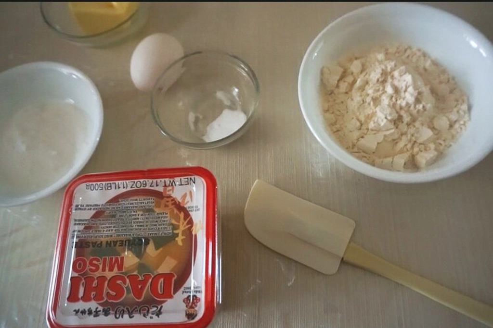
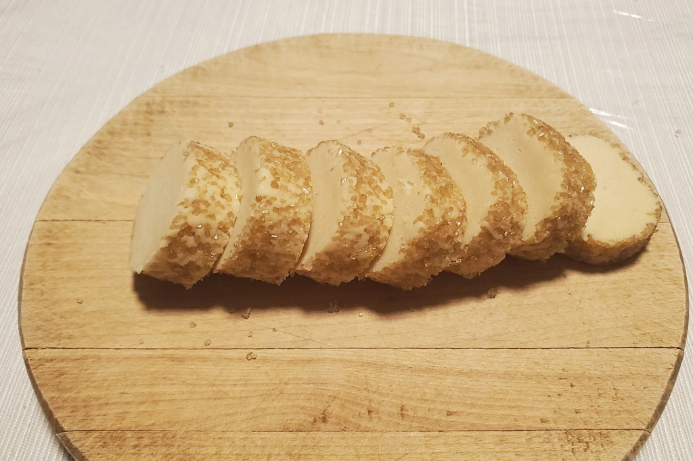
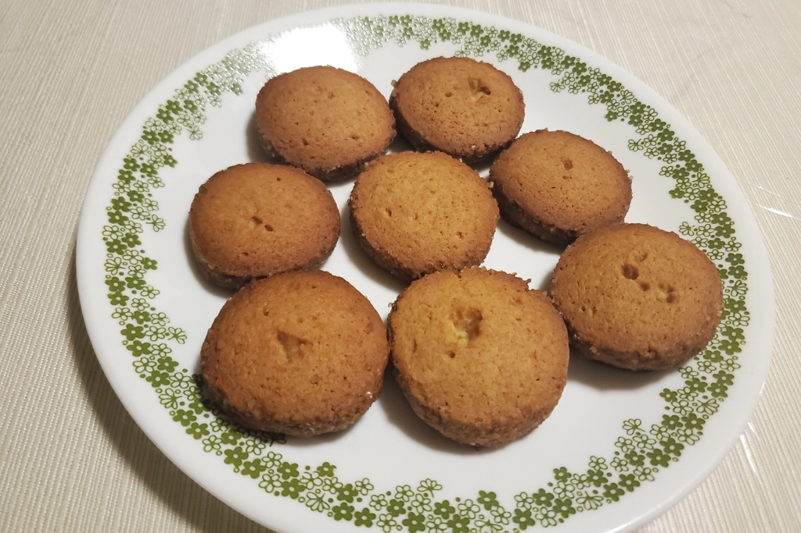

Miso Butter Cookies
Feb 4 - Written by Bonnie
Thinking about all the different condiments that I could only use so much of that have been living in my fridge for the longest time, I decided to do some recipe exploring! I always knew seasoning and condiments could be very multipurpose but I never thought something savory could become something sweet!
The condiment of choice this time was miso paste! I’ve had a recent craving for miso soup, but there’s only so much soup I can drink and so I went out looking for other ways to use up my large container of miso and that's when I stumbled on to this Miso Butter Cookies recipe from Just One Cookbook!
Since I do have a preference for desserts that are a little less sweet and a little more rich in flavor, I thought this would be the most interesting and yummy harmony of flavors, and since I had no idea where to buy miso cookies, I did the next best thing-- bake them!
This miso butter cookie recipe is super easy to make and most importantly only requires your usual pantry ingredients that you would typically have in stock in your home--which means you can make cookies at any time!! Although miso paste can be hard to find at some grocery stores, its definitely a staple in any one of your neighborhood Asian grocery stores and should be relatively easy to find as well! The one thing to point out is that although her recipe calls for white miso that's a little bit sweeter, I used a richer and saltier type of miso paste and added a little bit less than what was indicated in the recipe and it turned out great! I actually think that with the richer and saltier miso it was able to provide a little bit more savory flavors to the biscuit that balances out the sweetness of the demerara sugar that I used.
The process of making the dough was relatively easy, especially with a stand mixer as long as you make sure to mix all the ingredients evenly and smoothly together the dough will come out perfect in no time! I think what's most enjoyable about this dough is how easily moldable it was so it was super easy to roll it into the perfect sized log to cut the cookie! It was also so satisfying to just play with too.
Before fridging the log again to cut into slices, I rolled the dough in some demerara sugar. This was definitely on a whim since her recipe calls for sesame seeds instead but since I had some of that sugar left I thought it would be interesting to cover the dough in that instead. The sugar was successful especially because I used a saltier miso paste, it definitely helped balance out the savory and sweet to create a nice harmony of flavors and ended up tasting great!
I still can’t believe how easy it was to make this recipe and how delicious it came out! I think the best part about this recipe is that it also helped me use up some of my condiments that made it a great way to not waste food and get some new food and recipes into my cook book!